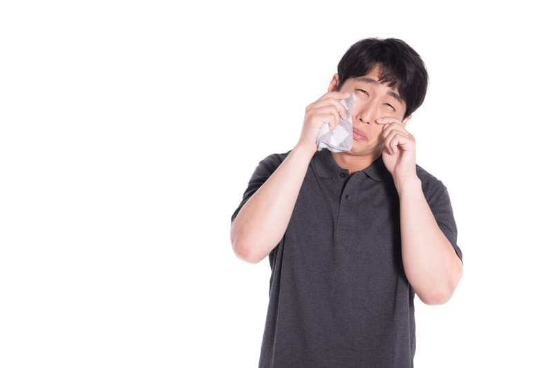

睫毛乱生の鍼灸
まつ毛が内向きに生えて角膜に当たる状態です。角膜の傷を防ぐ眼科処置を最優先とし、目周囲の血行と負担をケアします。
まず知っておきたい要点と改善の流れ
睫毛乱生は逆さまつ毛の一種で、本来は外向きに生えるまつ毛が根本からいびつな方向（内向き）に生え、角膜や結膜に接触する状態です。遺伝的要因のほか、慢性的な眼瞼の炎症や感染症、外傷・手術後の瘢痕、加齢によるまぶたのたるみ、化粧品や薬剤の影響などが関わります。放置すると角膜に傷がつき、角膜炎や角膜びらん、角膜潰瘍、視力障害へ進展するおそれがあるため早めの眼科受診が重要です。（公式解説）
このようなお悩みはありませんか？
- ✓まつ毛が眼球に当たってチクチク痛みや異物感がある
- ✓目の充血や涙が増え、目やにが出やすい
- ✓視界がぼやけたり、まぶた周囲の違和感が続く
- ✓まつ毛を抜いても繰り返し内向きに生えてくる
当院の施術アプローチ・改善の流れ
なぜ鍼灸で改善へ向かうのか？（作用機序の図解）
睫毛乱生に対する鍼灸は、後頸部〜眼周囲の微小循環と毛様体筋・自律神経調整機序を通じて、お体本来の回復力を引き出します。

眼球周囲の危険な深刺しを避け、風池・天柱・合谷・太衝など安全な経穴へ繊細に施術します。
PC・スマホ作業や緊張で固まった首深層筋と眼輪筋周囲の血流を促し、重だるさを軽減します。
交感神経優位による目の乾き・ピント調節疲労を鎮め、涙液分泌とリラックス反応を助けます。
眼科の点眼・定期検査を最優先としつつ、日々の眼精疲労や頭痛・肩こりの連鎖を整えます。
院長YouTube解説・関連動画
睫毛乱生の症状は、角膜や結膜に傷ができること

睫毛乱生の症状は、角膜や結膜に傷ができることです。これは、まつ毛の先端が角膜や結膜に触れてしまうことによって現れる症状です。
角膜や結膜に傷ができると、痛みや異物感が現れたり、充血を起こしたり、涙が出たりします。瞬きが異常に多くなったり、光を異常にまぶしがったり、目やにがでたりすることもあります。
症状が悪化すると、角膜に傷が多くできてしまい、視力障害が起きることもあります。
睫毛乱生の症状について
睫毛乱生は、睫毛が通常の成長パターンを離れて生える状況を指します。これは睫毛が異常な方向に生えたり、眼球に向かって生えたり、あるいは通常の睫毛ラインから外れて生えることを含みます。以下に、睫毛乱生の主な症状について詳しく説明します。
1. 睫毛の異常な成長
睫毛乱生の最も顕著な症状は、睫毛が通常とは異なる方向に成長することです。これは、上向きに生えるべき睫毛が下向きに生える、あるいは左右に生えるべき睫毛が上下に生えるなど、多岐にわたります。また、睫毛が異常に長くなることも見られます。
2. 不快感または痛み
睫毛が眼球に向かって生えると、それが眼球や結膜に接触し、これが不快感や痛みを引き起こすことがあります。これは、一部の人々においては、明らかな物理的な不快感として現れる一方で、他の人々においては、目が乾燥しているか、何かが目に入ったような感じとして感じられることがあります。
3. 眼球や結膜の炎症
睫毛が眼球に摩擦を与えると、これが炎症を引き起こすことがあります。この結果、眼球が赤くなったり、結膜が腫れたりすることがあります。これは結膜炎（ピンクアイ）の症状と似ているため、しばしば混同されることがあります。
4. 視力の問題
睫毛乱生は、視力に影響を及ぼす可能性があります。睫毛が正常な位置から外れて生え、視界を遮る場合、視力がぼやけたり、視界が制限されたりすることがあります。
5. 睫毛の損失または薄毛
一部の人々では、睫毛乱生が睫毛の損失または薄毛を引き起こすことがあります。これは特に、乱生した睫毛が眼球を刺激し、その結果として繰り返し引き抜かれるか、または自然に脱落する場合に起こります。
6. 眼瞼の変形
長期間の睫毛乱生は、眼瞼の形状や位置に影響を及ぼすことがあります。特に、乱生した睫毛が繰り返し眼瞼を刺激すると、その結果として皮膚が肥厚し、その形状が変わることがあります。
7. 増加した分泌物
睫毛が眼球や結膜に摩擦を与えると、これが涙の生成を刺激し、目の分泌物が増えることがあります。この結果、目がしっとりと感じられたり、目ヤニがたまりやすくなったりします。
8. 感染
乱生した睫毛が眼瞼の皮膚を刺激し、傷つけると、そこから細菌が侵入しやすくなります。これにより、眼瞼辺縁炎や角膜炎といった眼の感染症を引き起こす可能性があります。
睫毛乱生の症状は、人により異なります。一部の人々では、乱生が眼に大きな不快感や痛みをもたらす一方で、他の人々では、症状がほとんどないか、または全くないこともあります。しかし、無症状の場合でも、乱生した睫毛が長期間にわたり眼球を刺激し続けると、角膜擦過症や角膜潰瘍といった深刻な状況を引き起こす可能性があります。
睫毛乱生の改善方法は、点眼です。角膜や結膜に傷ができている場合には点眼によって傷の改善を行うのです。改善のためには眼球に触れてしまっているまつ毛を抜くことも大事です。
しかし、まつ毛は抜いても再び生えてきます。そのため、再び生えてきたまつ毛が眼球に当たる場合はもう一度抜くことになります。
根本的な改善方法としては、まつげが再生しないようにすることが必要です。そのためには、電気分解や冷凍凝固、レーザー光凝固などの手術を行うこともあります。
乳幼児の場合、成長するとともに自然に改善することが多いです。２歳以上になっても改善しない場合は、症状の強さによって手術を行うこともあります。
手術には、電気分解や冷凍凝固の他にも、埋没法や切開法、眼輪筋短縮術などがあり、症状に合わせて行います。
睫毛乱生の改善法
睫毛乱生、またはトリコアシスは、睫毛が眼球に向かって生えてくるときや、異常な方向に成長する場合を指します。この病状は、不快感、痛み、視力問題、さらには視覚障害を引き起こす可能性があります。以下に、睫毛乱生について詳述します。
1. 手術的な改善法
睫毛乱生の最も一般的な改善法の一つは、眼科手術です。これは、特に乱生が繰り返し起こる、または眼の健康を脅かすと判断された場合に行われます。
電気脱毛：電気脱毛は、細い針を用いて直接毛根に電流を通し、毛根を破壊する改善法です。これにより、乱生した睫毛が再び生えるのを防ぎます。
レーザー脱毛：レーザー脱毛は、特定の波長の光を用いて毛根を破壊します。これにより、乱生した睫毛が再び生えるのを防ぎます。
眼瞼転膚術：眼瞼転膚術は、睫毛が生える方向を変えるための手術です。これは、特に睫毛が眼球に向かって生えている場合に行われます。
2. 非手術的な改善法
手術が必要でない場合や、手術を避けたい場合は、非手術的な方法もあります。
物理的な除去：専門の機関では、専用の器具を使って乱生した睫毛を物理的に引き抜くことが可能です。ただし、これは一時的な解決策であり、睫毛は再び生えてくる可能性があります。
トップカール：睫毛を眼球から遠ざけるために、通常のビューラーやパーマ液を用いて睫毛を上向きにカールさせる方法です。
3. 予防策と自己管理
睫毛乱生の再発を防ぐためには、予防策と自己管理の方法が役立つことがあります。
目の衛生：目や睫毛の周りの皮膚の清潔さを保つことは非常に重要です。定期的に洗顔を行い、メイクアップは必ず取り除くようにしましょう。これにより、皮膚の感染症や炎症が起き、それが睫毛乱生を引き起こすのを防ぐことができます。
健康的な生活習慣：健康的な食生活や十分な睡眠は、体全体の健康を維持し、皮膚や毛髪の健康にも寄与します。ビタミンやミネラルが豊富な食事を心がけ、ストレスを適切に管理することが大切です。
定期的に調べる：定期的な眼科は、初期の段階で問題を発見し、適切な改善を開始するために重要です。
適切なメイクアップとスキンケアの使用：刺激的な化粧品やスキンケア製品を避け、敏感肌用の製品を選ぶことをお勧めします。これにより、皮膚の炎症や感染症のリスクを減らすことができます。
以上の方法や予防策は、一部には効果的であるものの、全ての人に同じ効果があるわけではありません。また、これらの方法は一部の人には副作用を引き起こす可能性もあります。
睫毛乱生をそのまま放っておくと角膜に傷がつくことがあります。
角膜に傷がつくと、角膜炎や結膜炎、角膜びらん、角膜潰瘍などの病気にもつながります。目の病気は悪化すると、視力障害を引き起こすこともあります。
気になる場合は早めに病院に相談に行くことをお勧めします。
眼のお悩みのツボ図解とセルフケア
実際の施術ではお一人おひとりの体質・症状に合わせて選穴しますが、眼科領域の補完ケア（ドライアイ・眼精疲労・視神経ケア研究）の臨床でよく用いられる代表的なツボの目安です。

📌 代表的なツボの詳細一覧表を開く（6穴） ▼
| ツボ名 | 位置の目安 | 主な狙い | セルフケアの注意点 |
|---|---|---|---|
| 睛明（せいめい） | 目頭と鼻の付け根の間のくぼみ | 眼精疲労・ドライアイ・眼周囲の血流促進 | 眼球は絶対に押さない（緑内障の方は圧迫厳禁） |
| 攢竹（さんちく） | 眉頭の内側端のくぼみ | 目の重だるさ・眼精疲労・前頭部の緊張緩和 | 骨縁を軽く支える程度にし眼球へ力を逃がさない |
| 太陽（たいよう） | 眉尻と目尻の中間からこめかみ側へ指1本後ろ | 眼精疲労に伴うこめかみ頭痛・眼輪筋緩和 | 血管・神経が集まるため円を描くように優しく |
| 四白（しはく） | 瞳孔の真下、目の下の骨縁から指1本分下 | ドライアイ・目の下の循環・眼輪筋疲労ケア | 眼窩下神経出口のため強圧禁止、軽圧で |
| 風池（ふうち） | 後頭部の生え際、耳後ろと首筋の間のくぼみ | 後頸部の筋緊張解除による眼血流・自律神経ケア | 首を反らしすぎず斜め上へゆっくり |
| 合谷（ごうこく） | 手の甲、親指と人差し指の骨が交わる手前 | 顔面・眼周囲の循環促進、頭痛緩和の遠隔穴 | 妊娠中は強い刺激を避ける |
国際査読論文の科学的エビデンス
国際的な医学データベース（PubMed・Cochrane等）で報告されている眼科領域の補完ケア（ドライアイ・眼精疲労・視神経ケア研究）領域の代表的な査読済み鍼灸研究をまとめています（標準治療との併用や研究上の限界を含めて正確に掲載）。
📚 査読論文データ・PubMed出典リンクを開く（4件） ▼
| 年・研究デザイン | 対象・規模 | 主な結果 | 限界・出典 |
|---|---|---|---|
| 2024年 メタ解析 | ドライアイ 16試験（n=1,383：人工涙液併用） | BUT（SMD 1.25, P<0.0001）、シルマー試験（SMD 1.55, P<0.0001）、角膜染色・総有効率（OR 4.09）が有意改善。 | 自覚症状OSDIは有意差なし（P=0.15）。人工涙液との併用評価。 Medicine (PMID: 38181299) |
| 2019年 二重盲検RCT | ドライアイ 49名（米国・6か月追跡） | 実鍼群はOSDIスコアが1週〜6か月まで有意改善（6か月p<0.01）、乾燥感・充血も有意軽減。 | 小規模・客観的涙液指標（TBUT等）は有意差なし。 Clin Ophthalmol (PMID: 31114151) |
| 2020年 Cochraneレビュー | 緑内障・高眼圧症 3 RCTs（n=137） | 一時的な眼圧低下の報告はあるが8週時点で差消失、視力は有意差なし。 | 全試験が高バイアス・確実性非常に低。点眼治療の代替不可。 Cochrane (PMID: 32032457) |
| 2025年 メタ解析 | 変性眼疾患 21研究（緑内障・黄斑変性等） | 総有効率はOR 3.52（p<0.00001）だが、統合視力（p=0.50）・眼圧（p=0.11）に有意差なし。 | 非ランダム化研究含む。眼科標準管理下での補完研究段階。 Complement Ther Med (PMID: 40850524) |
参考文献・出典
- 銀座そうぜん鍼灸院「睫毛乱生の公式解説ページ」
- 2024年 メタ解析（ドライアイ 16試験（n=1,383：人工涙液併用））— Medicine (PMID: 38181299)
- 2019年 二重盲検RCT（ドライアイ 49名（米国・6か月追跡））— Clin Ophthalmol (PMID: 31114151)
- 2020年 Cochraneレビュー（緑内障・高眼圧症 3 RCTs（n=137））— Cochrane (PMID: 32032457)
- 2025年 メタ解析（変性眼疾患 21研究（緑内障・黄斑変性等））— Complement Ther Med (PMID: 40850524)
よくある質問（FAQ）
Q. 自分で毛抜きを使って逆さまつ毛を抜いてもよいですか？▼
Q. 症状が軽ければ放置しても大丈夫ですか？▼
あわせて読まれる関連疾患（眼のお悩み）
角膜にアミロイドが沈着し強いまぶしさや異物感が生じる指定難病です。眼科治療最優先で安定期の疲労や首肩こりを支えます。
白目の結膜が過度に緩み涙目や異物感が生じる状態です。眼科での点眼や手術管理を基本とし、目周囲の疲労と乾燥対策を支えます。
黄斑部に血漿成分が漏れ出し嚢胞状のむくみが生じる病気です。眼科での標準治療を最優先に、安定期の疲労・体調を支えます。
白目やまぶた裏の粘膜が炎症を起こす病気です。感染性は眼科受診を最優先に、アレルギー性の体質・免疫バランスを整えます。
片眼の外傷や手術後に健常眼にも自己免疫性炎症が生じる重篤疾患です。眼科治療最優先で安定期の補完ケアを支えます。
遺伝性に黄斑部の視機能が低下する指定難病の総称です。眼科専門医での管理を最優先に、安定期の眼精疲労や首肩こりをケアします。
おひとりで悩まず、まずはご相談ください
銀座本院・川口・大宮・横浜・博多・田無の各院でご予約を承っております。